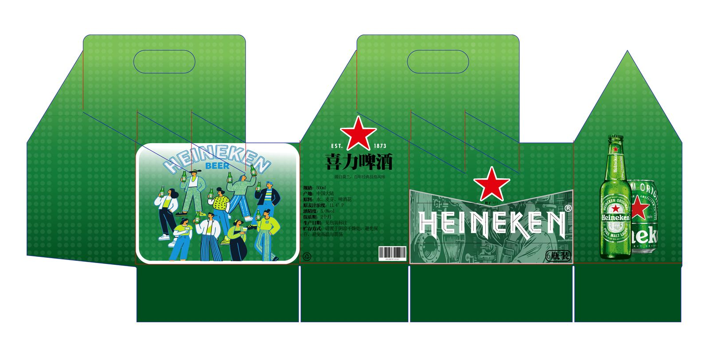
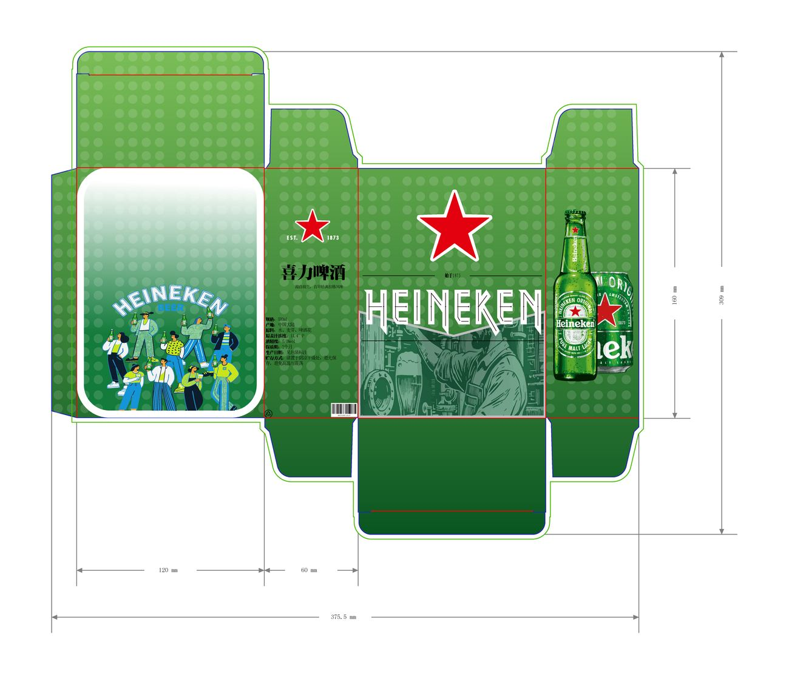
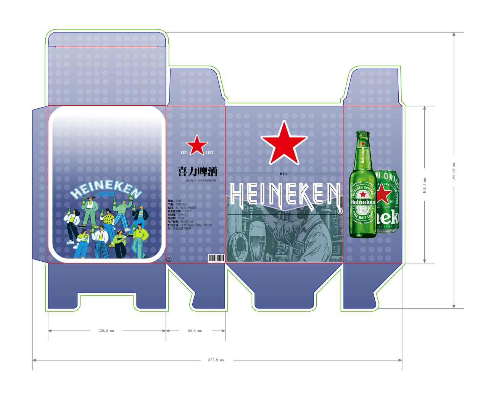
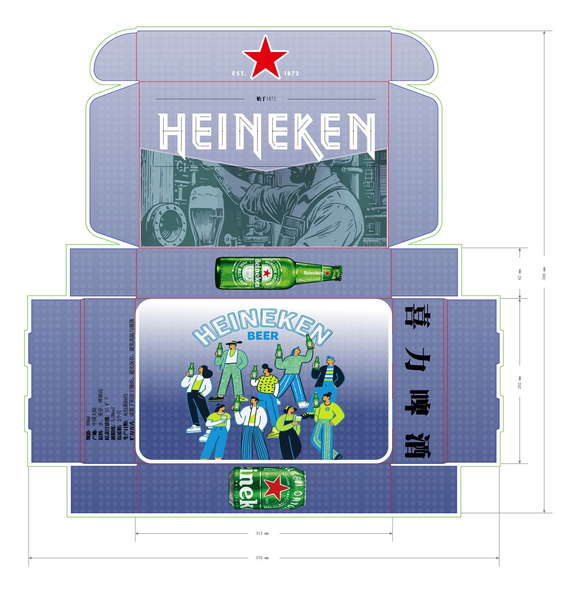
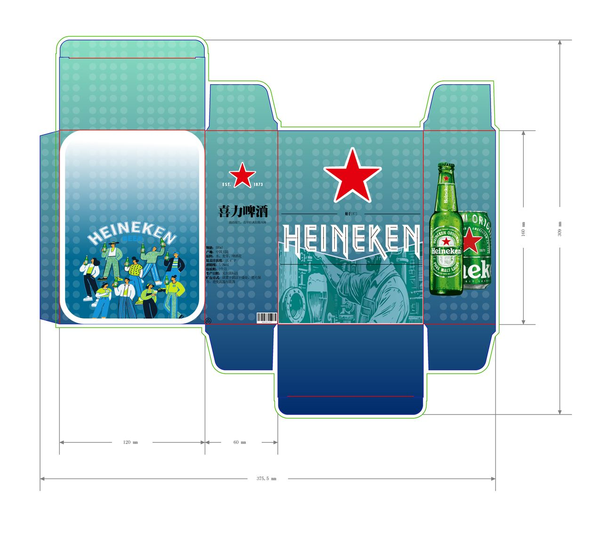
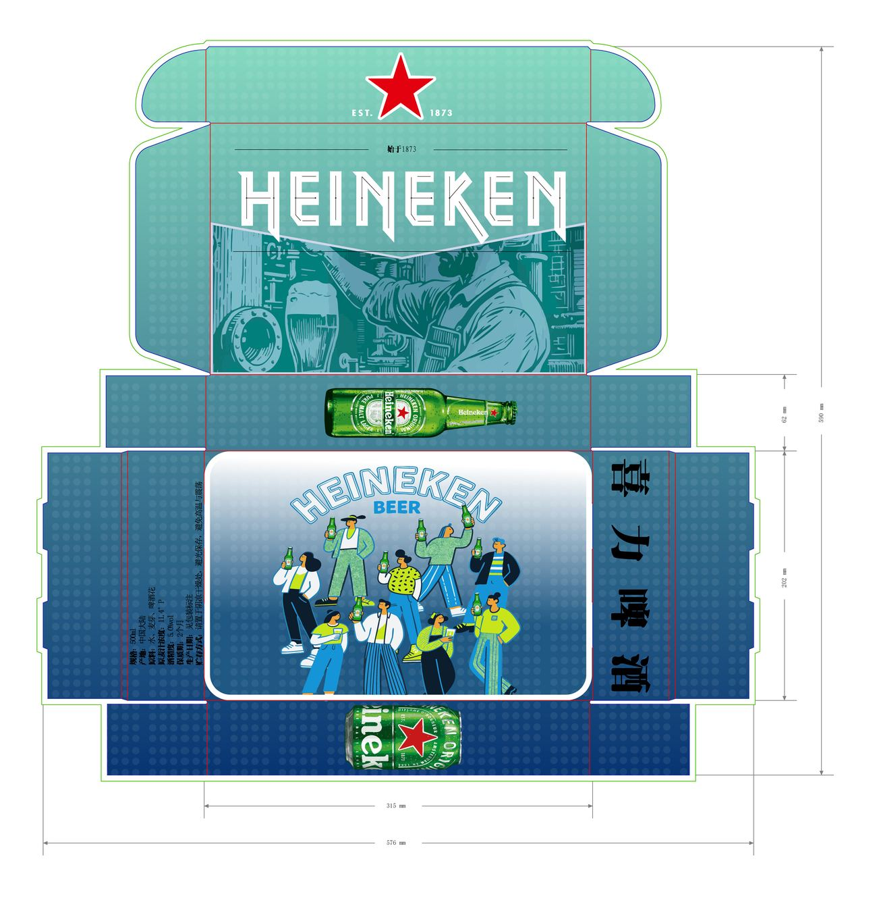

03 — 包装设计Packaging
喜力啤酒
包装设计
HEINEKEN
Gift Packaging
为喜力啤酒设计节庆礼赠场景下的多款包装结构：6 瓶装手提盒、插口式邮寄盒与翻盖礼品盒，并输出完整的盒型展开图。 Packaging structures for Heineken in a festive gifting context — a 6-bottle carrier, a tuck-top mailer and a lidded gift box, with complete dielines.

Year
2025
Role
主创设计Designer
Client
课程课题 · 喜力啤酒
Scope
盒型结构 · 刀版展开图 · 主视面编排 · 三色系列Structure · Dielines · Panel Layout · Three Colourways
01 / 背景Context
礼盒的双重约束Two constraints at once
啤酒在节庆场景中大量以礼盒形式流通。包装既要承受堆叠与运输中的挤压，又要在货架上被一眼识别——结构强度与陈列效果往往互相牵制。 Beer moves through the festive season largely as gift packs. Packaging has to survive stacking and transport while still being identifiable at a glance on shelf — structural strength and shelf presence usually pull against each other.
02 / 策略Strategy
不增加装饰层No extra decorative layer
沿用喜力既有的绿、紫、蓝三色体系作为系列区分，把品牌星标与瓶身作为唯一的主视觉，不额外增加装饰层。 The existing Heineken green, purple and blue system carries the series differentiation; the brand star and the bottle are the only key visuals, with no added decorative layer.
三色分别对应三种盒型，让系列在货架上既统一又可区分。 Each colour maps to one structure, so the range reads as a family while staying distinguishable.
03 / 执行Execution
从刀版到立体From dieline to volume
先确定三种盒型的结构与刀版展开图，再排布主视面、侧视面与条码区，最后验证折叠顺序、插口公差与用纸克重。 The three structures and their dielines were fixed first, then the main, side and barcode panels were laid out, and finally the folding sequence, tuck tolerances and paper weight were verified.
手提盒以一体化提手减少零件，邮寄盒用插口结构省去粘合，翻盖礼盒则在内衬上固定瓶身，避免运输中碰撞。 The carrier uses an integrated handle to cut part count, the mailer relies on tuck locks instead of glue, and the lidded box holds bottles in an internal fitment to prevent movement in transit.
04 / 成果Outcome
三色三款完整刀版Three colourways, complete dielines
交付手提盒、邮寄盒与翻盖礼盒三款结构，每款提供完整刀版展开图与立体效果图。 Three structures delivered — carrier, mailer and lidded gift box — each with a complete dieline and a rendered view.
品牌色彩Colour System
作品呈现Visuals




